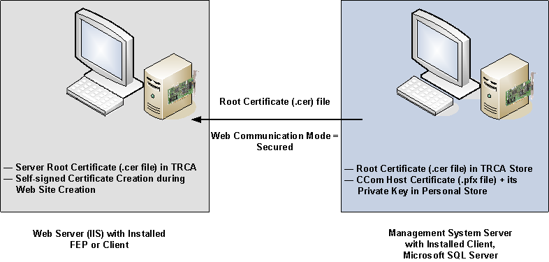

Server and a Remote Web Server (IIS)
This section describes a typical deployment scenario for setting up a Desigo CC system with the web server (IIS) installed on a separate computer.
Server Station
A single dedicated workstation with the following features:
- Desigo CC server is installed.
- Microsoft SQL is installed on the Desigo CC server.
- The server project folder is shared.
- The required certificates (SMC created or commercial) are imported in the Windows Certificate store:
- The root certificate is imported in the Trusted Root Certification Authorities store.
- The host certificate and its private key are imported in the Personal store.
- The host certificate used must have a private key; no private key is needed for a root certificate.
Remote Web Server (IIS) Station
- The Windows App client requires installing an optional web server (IIS) component. When the web server (IIS) is installed on a separate computer known as the remote web server (IIS).
- A remote web server (IIS) hosts web sites and web applications. To simplify the web site configuration using SMC, it is recommended that you also install the Desigo CC client (or FEP) component on this machine.
- The web application user on this remote web server has access rights on the shared project folder on the server.
- The required certificates (SMC created or commercial) are imported in the Windows Certificate store:
- The root certificate of the host certificate provided for CCom port security is imported in the Trusted Root Certification Authorities store.
- The communication between the web server and the Windows App clients is always secured. Hence, the web site and the web application creation certificates are mandatory. Desigo CC supports using either the same or different certificates for the web site and the web application. This chapter describes how to configure the web server to use the same certificate for both the web site and the web application.
- When a commercial certificate is used for creating a web site and web application, then ensure the following:
- The commercial self-signed certificate must be imported in the Trusted Root Certification Authorities and Personal stores of the Local machine store.
- The commercial host certificate, along with its private key, must be imported in the Personal store and its root certificate must be imported in the Trusted Root Certification Authorities store of the Local machine store.
- You can also configure a remote web server (IIS) as an Installed Client/FEP. This will allow you to perform the Client/Server deployment scenario. For more information, see client/server deployment scenario.
Security
- Secure server/remote web server (IIS) deployments require medium security configuration setup.
Deployment Diagram
